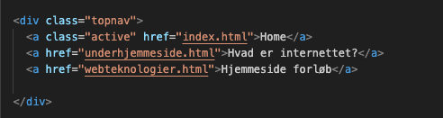

I dette forløb har vi lært at lave hjemmesider, og lidt om teorien bag det.
Nedenstående er et stykke af min kode

i denne kodestump, har jeg levet en navigationbar/menu bar.
I første linje har jeg lavet en div, og givet den klassen "topnav", som er denne navigationsbar.